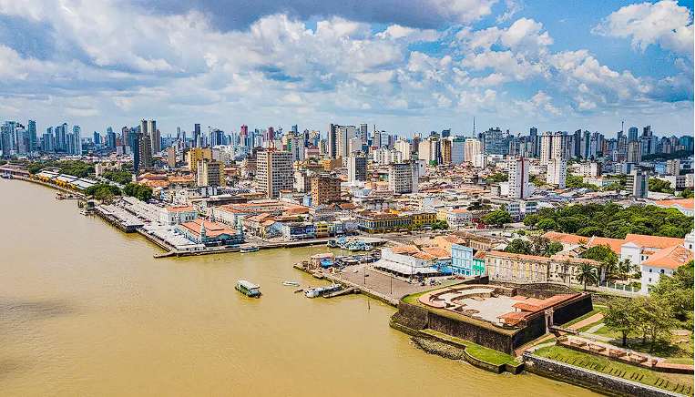

About me
My name is Gleyson, I'm 26 years old and I've been married for 3 years to the most incredible woman in the world.
I like listening to music and playing games.
My favorite food is Shepherd's Pie.
I also love spending time with the people I love.
I want to be a great DBA and I want to create an application that can help people in their daily lives.

Belém-PA, Brasil
 Pará is the second largest state in Brazil, and is located in the northern region. It is extremely well-known due to the Amazon rainforest it houses. Belém is its capital and is the largest city in the north of the country with a population of 2 million inhabitants. Belém is known for being at the exit of the Amazon River, the largest river in the world and for being more than 400 years old. The cuisine in Belém was considered one of the best in Brazil.